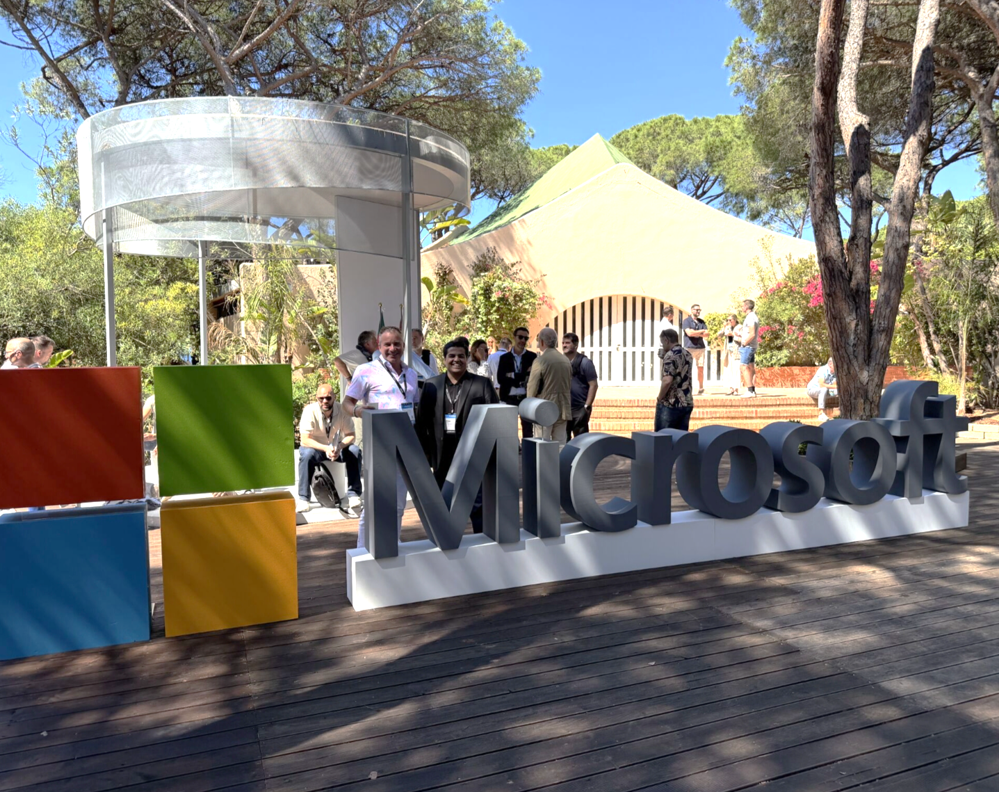
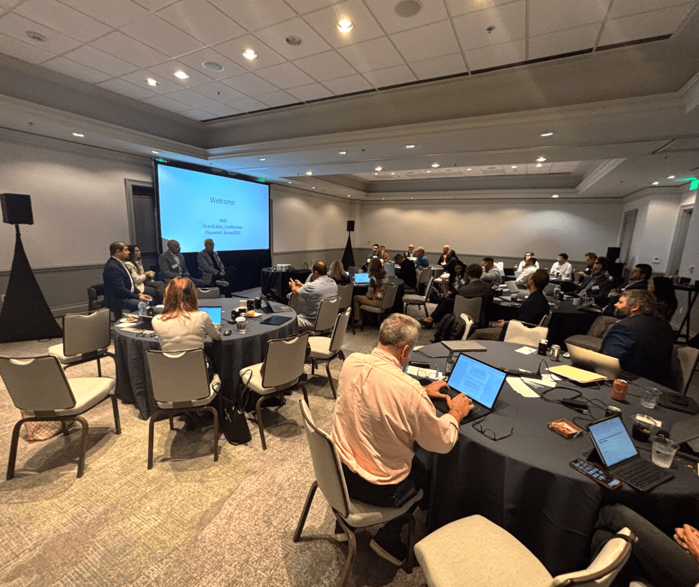
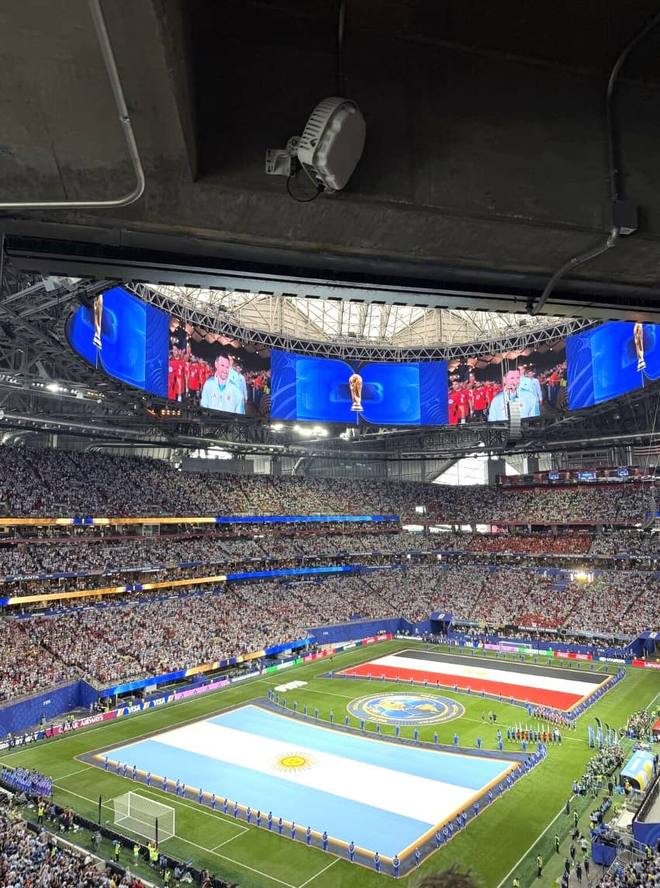
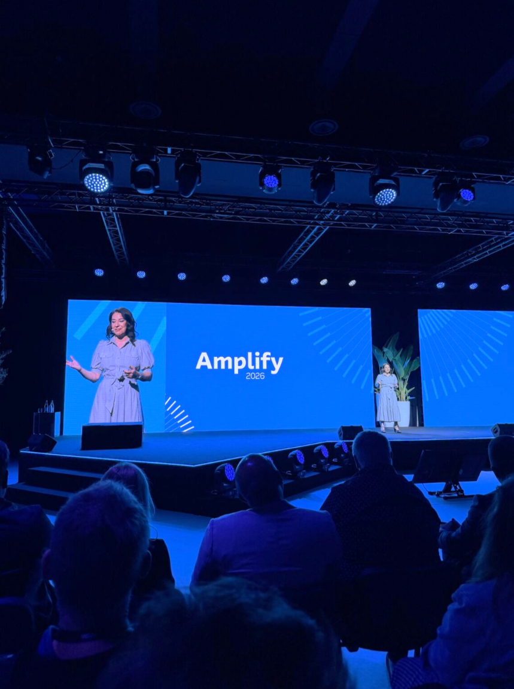
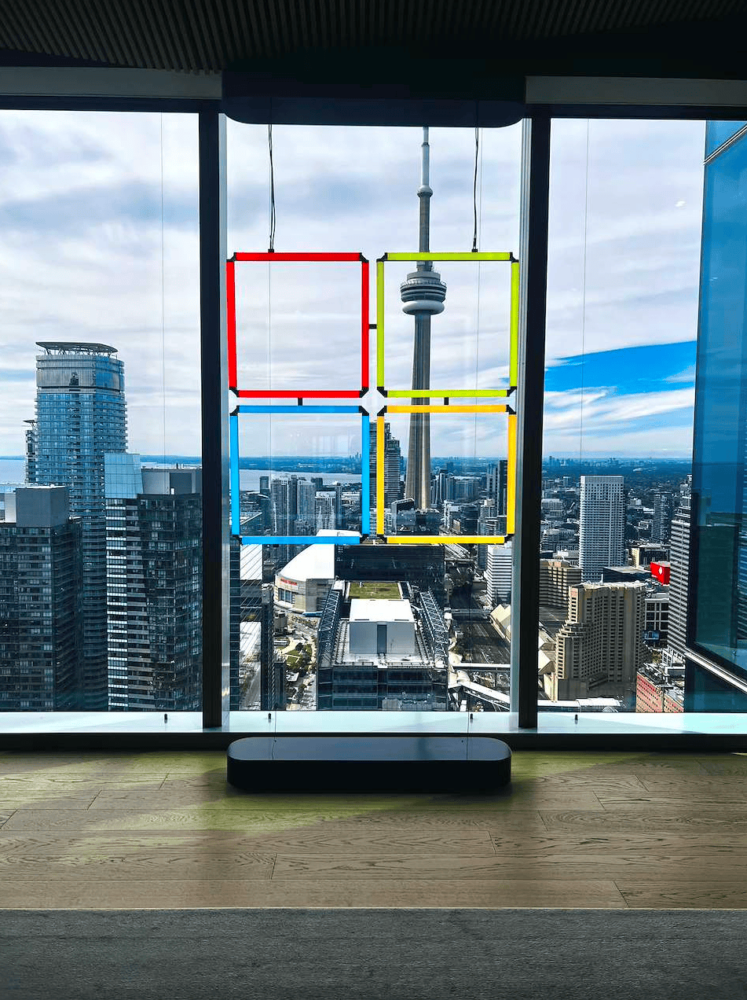
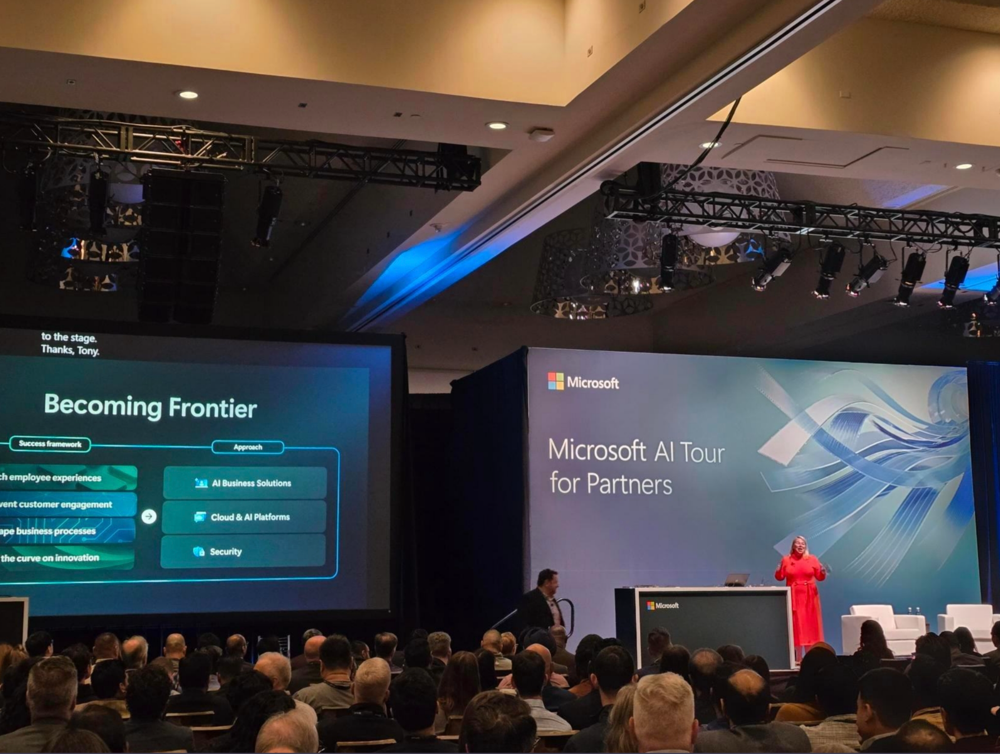
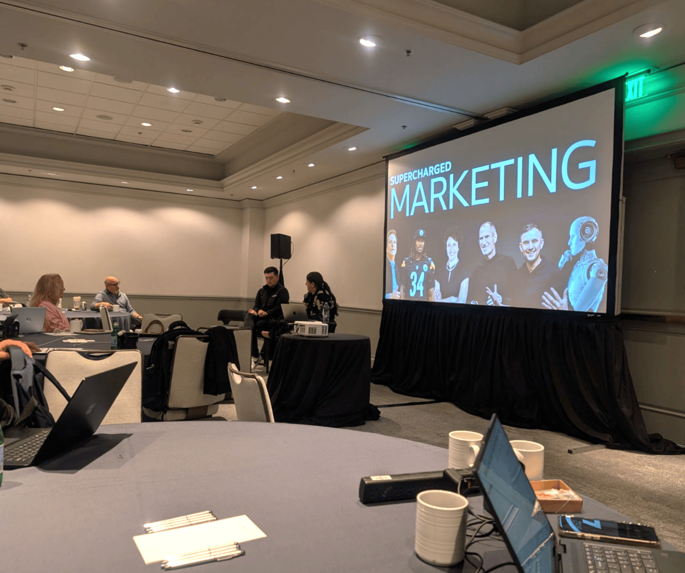
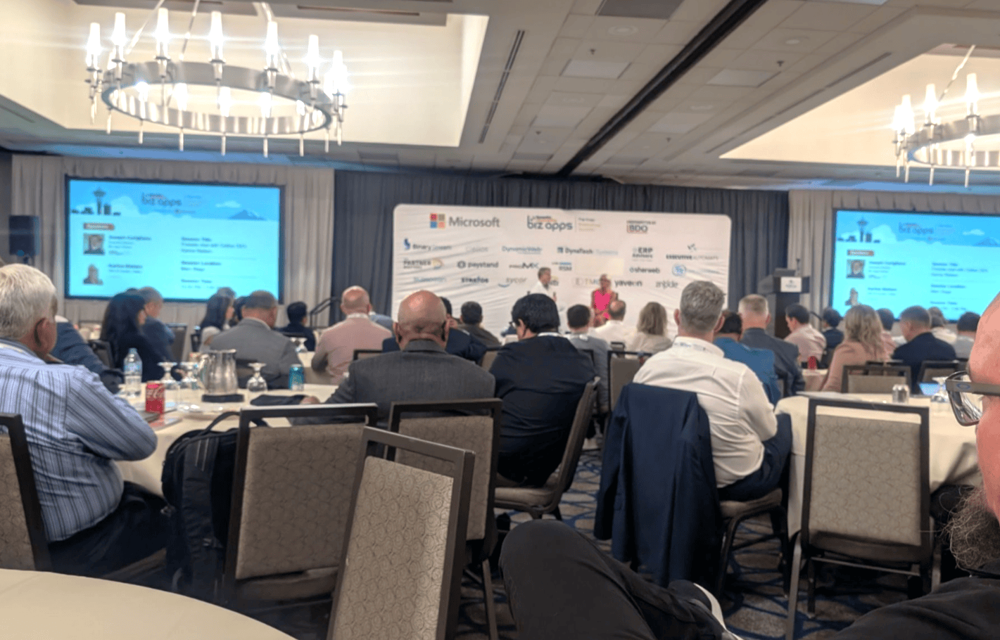

Team gathering
Team gatheringHome / Company / Life at DataInvent Systems
LIFE AT DATAINVENT SYSTEMS
We build.
We grow.
We belong.
Behind every project is a team that looks out for each other. This is what working at DataInvent Systems feels like.
Real people · real moments · one connected team
Team gathering
Microsoft event Celebration
CelebrationLIFE
AT DITOGETHER IN MOTION
AT DITOGETHER IN MOTION

Conference Team activity
Team activity Community
CommunityLife at DataInvent Systems · shared moments
OUR CULTURE
The way we work
starts with people.
In 2026 we became Great Place to Work® Certified in Canada. It reflects how our people support each other, collaborate and take ownership of their work.
01
We look out for each other
Support runs both ways here, whatever your role or title.
02
We work as one team
Collaboration comes before job titles.
03
We own the outcome
If it is ours, we see it through.
04
You belong here
A place where people feel welcomed, valued and part of the team.
MOMENTS THAT DEFINE US
Work connects us.
Experiences shape us.
The best moments rarely happen at a desk. Here are some of ours.
Team connectionPrimary event moment
Shared experienceTeam activity
CelebrationCompany moment
TogetherOne connected team
EVENTS & EXPERIENCES
Showing up where
ideas move forward.
We turn up where Microsoft, our clients and the wider technology community come together, to learn, listen and meet the people we work with.

013 photos+ Open galleryFIFA World Cup Networking in Atlanta
Building relationships with Arrow, partners and customers at a FIFA World Cup match in Atlanta.

023 photos+ Open galleryPartner Success and the Microsoft Ecosystem
DataInvent Systems joined Microsoft, Arrow and 300+ partners to discuss the Microsoft ecosystem, sales acceleration and partner success.

033 photos+ Open galleryStrengthening Our Microsoft Partnership in Toronto
Meeting the Microsoft Toronto team to grow our partnership across Business Applications, Modern Work, Data & AI and Infrastructure.

045 photos+ Open galleryExploring Microsoft's AI and Marketplace Strategy
Our Toronto team joined Microsoft's AI Partner Tour to hear the latest on AI agents and the Microsoft marketplace.

054 photos+ Open galleryArrow/Microsoft Executive Summit
Discussions with Arrow, Microsoft and top partners in Orlando, including an All Hands session on Microsoft Copilot Business.

062 photos+ Open galleryAI-Powered Transformation and the Future of Copilot
Connecting with Microsoft and partners on its strategic goals and its vision for AI-powered transformation with Copilot.
COMMUNITY IMPACT
Growth means more
when it gives back.
As DataInvent Systems has grown, so has what we want to give back to the communities around us.

Community support
Housing initiatives
Approved paragraph placeholder describing DataInvent Systems's support connected with underprivileged housing and homelessness.

Local communities
Youth sports sponsorships
Approved paragraph placeholder describing support for local sports teams and community participation.

Giving back
Charitable initiatives
Approved paragraph placeholder describing fundraising, awareness and other contributions.
ONE CONNECTED TEAM
Behind every outcome
are people who care.
Every project has real people behind it, and they care how it turns out.
“We’ve built something we can genuinely be proud of, and this certification is a reflection of the culture we’ve created together.”


JOIN THE JOURNEY
Your next chapter
could start here.
If you like solving real problems with people who will back you, come and see where you might fit.
Explore Careers →People
Purpose
Progress
Purpose
Progress